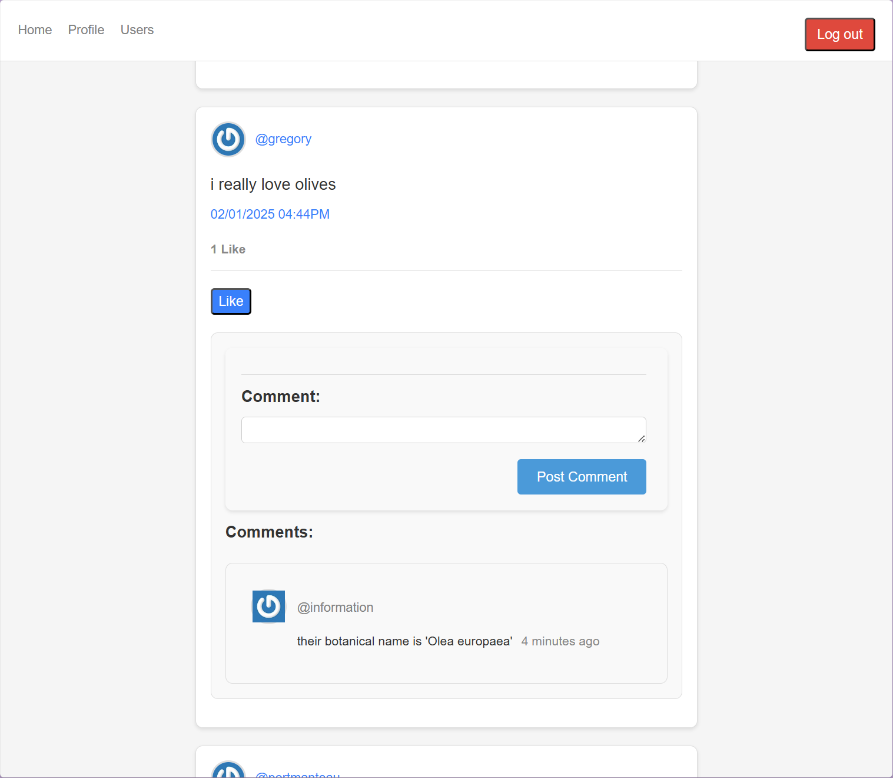

-

Gawlf
A turn-based multiplayer game to play online with friends, based on the classic playing card game Golf, made using React and Ruby on Rails.
-

Statchasing
A site for Rocket League players, made with React and Ruby on Rails, which provides interesting analytic data in addition to what can be found on ballchasing.com, via its API.
-

The Technology Store
A mock store made with React to practice implementing client-side routing using the React Router DOM library, featuring dummy products sourced from Fake Store API.
-

Frendo
A social media clone built with Ruby on Rails, complete with authentication using Devise, user profiles, and following functionality.
-

Poké-Memory
A simple memory game made with React using images sourced from PokéAPI.
-

Battleship
CURRENTLY UNDER CONSTRUCTION
A classic game of battleship, to be played either vs. a computer opponent, or a friend locally.
-

Weather App
Checks the current weather in any city using Visual Crossing's API, including the temperature in both Fahrenheit or Celsius. Also displays a cute icon depending on weather conditions!
-

TBD✓
A site that lets you track life's many projects and tasks with ease. Featuring persisting data, dynamic light/dark theme based on your system's theme, and some fancy animations.